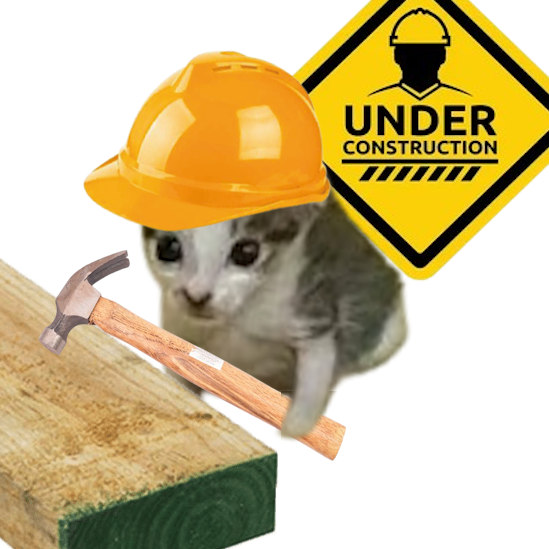

🎵 OSoundtracks SA Generator Packs
Guide and generator for automatic soundtrack mod pack creation
OSoundtracks SA Generator Packs
Generate sound configurations for OSoundtracks SA mod. Each generator creates specific INI entries for different sound key types.
SoundMenuKey
Generator creates packs for background sound albums. Drag music, drag cover image, place album name and pack name. Everything is automatic. Press download and have the mod in your hands. Packs are yours to share. No problem creating your own packs with your preferred music. Download from wherever you want. I am not responsible for non-royalty-free audios. If publishing, must be royalty-free with proper permissions. Without permissions, not a good idea to publish. Preferably add source links. Always give thanks to music creators.
SoundPositionKey
Generator placeholder - configuration will be added here.
SoundKey
Generator placeholder - configuration will be added here.
SoundEffectKey
Generator is being built, please wait for the next weeks.

SoundTAGKey
Generator is being built, please wait for the next weeks.
🙏 Acknowledgments
Thank you to all my supporters and beta testers
Sponsors and Donations
Thank you very much to all my patrons and the people who altruistically support me so I can continue with mod projects for Skyrim, manuals for new mods, and robotics. Without you, I wouldn't have all the motivation. That drive gives me the strength to keep going, since I like to keep my word, so even if it takes me time to make the mods, I'll eventually do them, and you believe in me. Thank you very much.
Level 4: Support from a Mad Scientist
Level 2: Wizard of Cats
Level 1: Cat Companion
Former Patrons
Free Members & Followers
Ko-fi Supporters
Beta Testers
Special thanks to our dedicated beta testers who helped make this project possible:

Cryshy
Beta review, observation of future applications

IAleX
Beta review

Lucas
JSON analysis and observation of corrections in ini parameters

OpheliaMoonlight
Testing Unicode support, multiple betas reviewed

storm12
Mod betatester in complex mod list

Thalzamar
Beta tester

iDeadSea
Beta tester for COtR and multi-language analysis

AdrienMassenot
Thanks to his observations on the HIMBO system, which led to improvements in it

Edsley
Advisor on templates and free web addons

Triberzis
Advice/ideas for system modes and keys

djdunha
Beta tester for the GOG platform, communicated through Nexus.
Additional Credits
Cryshy
Beta review: UBE users who with their help I managed to better understand the world of this type of bodies. Thanks to their observations and ideas I implemented the automation system for UBE presets in the blacklist, and default application to UBE races. With this, NPCs with UBE will no longer appear skinny by default, but will be able to have UBE presets for them from the start. Thank you very much.
Triberzis
Thanks to your observation about the use of keys, the system has been modified and implemented with a more comprehensive preset search system based on the presets installed in the player's game. Thank you very much for the idea, which has been implemented in the latest version.
Lucas, OpheliaMoonlight, Thalzamar, iDeadSea, AdrienMassenot
I thank you for testing the betas and giving me your respective observations across your different game versions and mod organizers. Thank you very much.
AdrienMassenot
Thanks to his cooperation with HIMBO system testing, which led to significant improvements in the male body preset distribution logic.
iDeadSea
Thanks to his cooperation with multiple beta tests, he provided information from his Skyrim version in Cyrillic, with which it was decided that different Skyrim versions handle different default names for each NPC depending on the language in which the game is played, so it was decided to correct these and add new functions. Thank you.
CommonLibSSE NG
Fundamental framework for developing modern SKSE plugins.
SKSE Team
For the continuous development and support of the Skyrim Script Extender.
OBody NG Team
For creating the base that makes this functionality possible.
Modding Community
For the constant feedback and ideas for improvements.
Music Skyrim
Thanks to the original authors of Skyrim for the music played directly from YouTube.
Flowchart, Whiteboard and Graphics
Thanks to Mermaid, Excalidraw and Graphics for being free and very useful tools for drawing and creating diagrams.
📋 Projects
Project Schedule Outline and Roadmap
Want to know more about the projects daily? Visit the News page to stay up to date. There is a Daily News section where John uploads daily updates on what he's working on, including progress reports, new features, and upcoming releases.
📰 Visit Daily News PageProjects and their descriptions
Each project has its image, which serves to identify it, but they are more of a summary of various projects.

Clear NPC Overlay Spells 🔮
Simplify cleaning texture errors on NPCs.
ORisk and Reward - Ostim StandAlone 🔮
SKSE mod created to automatically apply spells of all types to NPCs.

Bleeding Effect - Animated Bleeding 🔮
Animated spells for visual effects on NPCs.

FSMP Performance Personal Settings 📜
Simple FSMP configuration I use, will be improving it.

Buxom Wench Yuriana Quests 💕🔮
Long-term project, but I will be adding my ideas with new technologies.

Ostim StandAlone Pack Khajiit SFW 💕🔮
First and simple animation pack, still cooking the rest.

OBallroom Dancing - Ostim StandAlone 💕🔮
Port of animations from the great Shadowman - used my own programs.

OSoundtracks Expansion Sounds 💕🔮
SKSE mod to apply sounds, effects, and music to Ostim simply with INIs.
OSurvival Mode - Ostim StandAlone 💕🔮
Benefits for users who use Ostim and OSurvival.

RaceMenu Overlay and SlaveTats 🔮
Program to port tattoos to both platforms.

OBody NG Preset Distribution Assistant NG 🔮
Complex SKSE mod, but a great help for distributing presets.

OAlignment Automatic Merge 💕🔮
One of the most complex SKSE mods I've created, still in development. Once finished I can continue with animations.
Skyrim animations 💕
Generation for Ostim SL and OAR.
Manuals 💕📜
Manuals about animations, OBody, AI mods, and performance.
Robotics with Skyrim 📜⚙
Ambitious project I've been working on for years, and I'm gradually making progress on it.
Brief Explanation
💕 Animations for OAR, Ostim, SL, etc.
For over a year, I have been reviewing and improving all the animations I find, creating ports and refinements. I use tools like Blender, Cascadeur, and many others to gain a deeper understanding of the process. I have gradually improved my techniques and documented my ideas, even developing programs to enhance and automate these processes, which I will release over time. The program I am about to release is one that improves and corrects errors in animation skeletons. It's a matter of taking the HKX file, reviewing the skeleton, and converting the old skeleton to a lighter and more versatile one, this fixes most incompatibilities with Pandora and Nemesis. This program took me time to create, and it was thanks to reading many animations at the code level to understand the errors generated in some of the published ones. I hope to release it next year, with it, Pandora will be able to read almost everything, more than now. Consider it a kind of Pandora Forge New, but I'm working on it in secret, so there's no more information yet, okay. Besides other animation projects more advanced than that, which only some patrons and I manage. I have some ideas that will help a lot with the creation of animations for Skyrim, robotics, and technically for any game or whatever, I will publish them, of course, in due time.
💃 ODA - Outfit Management
This is a complex mod associated with the Assistance MCM system I built using Python and other languages. It integrates with the game through C++ to generate outfit lists and useful NPC information, while distributing advanced configurations. It is still in development, but I hope to release it soon to better manage my NPCs' outfits.
🔮 SKSE Mods for Ostim SA - Expanding Engine Limits
Ostim SA is incredible, but it still lacks many features that SL provides. To bridge this gap, I have been independently learning C++ to create my own engine expansion methods, such as animation aliasing merging and concise expansions. I am also working on sequenced, simple hand spells for both creators and users. This has been my main focus during this past year of silence.
🐱👤️ C++ SKSE Projects
One of the most complex steps for creating Skyrim mods is understanding the C++ language. I have been programming for a long time for work and as a hobby, I set C++ aside due to its complexity when compiling, the excessive use of space when compiling files, about 4 to 8 GB to compile a file no larger than 16 MB. Python is one of the fastest to create and run in environments without compilation, with many tricks I've learned over the years which I've gradually integrated into Skyrim, since even Linux uses Python, unlike C++ which requires creating a complete environment that doesn't always work. But after making some mods and seeing the limitations of Skyrim's game engine, the complexity of Papyrus, its slowness, how it saturates Skyrim's game engine, and since my purpose is to push the engine's limits further, I dove headfirst into C++, taking me over a year from September 2024 to the end of September 2025 to master mod creation in SKSE environments for compatibility with all Skyrim environments. Now I am capable of a lot, so above all, many thanks to the tutorial creator Mrowrpurr, whose advice and videos on how to work with SKSE are splendid. There are many videos without a sequential order, you have to watch them all once, then many more, and understanding them requires a lot of attention. I learned the basics, and they are very comprehensive, it took me a full year to fully comprehend everything. Unfortunately, as some years have passed, tools like Visual Studio 2022 no longer exist, and Microsoft with each update becomes more incompatible in compilation environments, so with each update I have to rebuild my work environment from scratch. Many thanks to all the tutorial creators who have left their teachings over the years. Now, with knowledge of SKSE, I have literally unlocked creative mode in Skyrim. I will use this power for good.
📜 Manuals: Performance, Animations, Textures, NPC AI, and More
I provide manuals of all types, now available on this website as well as in PDF format. Soon, I will release configurations for the AI mods I am frequently asked about, including guides on how to use them for free. Manual updates are coming very soon.
⚙️ Advanced Robotics
Officially, I have been involved in robotics for 11 years, starting in September 2014 (I remember I was drunk on a sofa looking at my phone, it was my first year of university, and I saw a 3D printer on YouTube. I already knew Arduino long before, and I didn't know what else to do, and I saw computer numerical control printing, and decided I'd make one because they were very expensive back then, and since then I haven't stopped creating machines). My long-term goal is to create a non-intimidating humanoid robot. Starting from the basics like personalization, event data management, and assistant integration, I have made significant progress in recent years. I am excited to eventually share the ability to extract NPC information and apply it to a real-world robot... yes, I work on this in my spare time, and I love it 💕.
🖼️ Mastering the use of textures and effects
Textures... I love textures in the game, you can do so much with them: like tattoos, effects, give a story, a complete change to situations. It's fascinating how using them in the game is so versatile. I work and will continue working a lot on texture creation using the beloved Paint.net, which is incredible, also some programs I created to convert textures to the BC3 version, which is the one that works best with Skyrim. There's a lot about DDS that I've learned, like their use, cleaning, management through mods like Slavetats, RaceMenu Overlay, Papyrus scripts, even in new methods like pure C++. I will support the community with everything I have to make processes simpler for everyone, and for myself, of course, as you know, I don't have all the time in the world, I work from Monday to Friday, so I have to automate all possible repetitive steps.
🐉️ Python 🤝 Skyrim
You know, I love Python. It's solid as a rock and versatile as a feather, free and can be used in many ways, whether compiled or not, installed or Embeddable, with a very useful usage license. I've used it a lot for almost a decade, and I'm glad that little by little I managed to make it functional for Skyrim, creating a kind of agreement between the Skyrim engine powered by C++ and in turn communicated to Python in a simple Embeddable version, also proving to be fast without CPU load with great persistence. So thank you, Python. There will be many future projects that will include this emblem because it can be used on Windows and Linux without problems, and as I like to now mix Python with JS, CSS, and HTML, (That's how I felt when I was almost forced to use only Qt5 and Tkinter in my projects 😹) this gives it a superior appearance to what I could achieve with the common Tkinter or Qt5, "I have also made an application or two with Flet, which are quite nice, but when converting them to EXE or trying to port them to other environments, problems appear. And I haven't dedicated much investigation time to it, maybe I will in the future" although I don't want to learn about React or Rust, because React has very serious security problems, they are category 10. 10 is the highest, so no, for now. And about Rust, it's good but its work environment is annoying for me, it's not as practical as Python. To create an EXE I have to consume several GB of my PC in compilation, reviewing the project is tedious and takes a lot of time. With Python, I just have to change .py to .pyw and that's it, each modification I make, with a simple click I check how the project is going, without compiling anything. So maybe when I have a more powerful PC I'll review Rust again, but I don't have space on my C drive for so many compilations. But I have to learn, it's a fact.
💎 Prisma Mods
After several years of working with modifications and entering the world of MCM files, there is currently a new way to create controls and configurations for mods which currently uses JS, CSS and HTML files as the main ones to achieve excellent results. Obviously it is not perfect, videos cannot be reproduced natively, audio cannot be reproduced natively. But that is not a limitation. Many of the projects I am currently working on have already overcome those limitations including communication videos including sound including games even inside. So for me it is an excellent way to work. Also, having worked for so many years with Python, working with JS is not so complicated and great things can be done online without having to download any program. Obviously there are many limitations currently and I am working hard for months to overcome each one of these limitations with simply tricks. One trick after another manages to solve the problems. It requires high amount of thinking yes but I love finding solutions to problems like this. Currently I think I have published very few on Nexus but most are on Discord or other places where I communicate. Also if you are a patron or someone who wants to know more about this aspect simply contact me and you can become a beta tester. Anyway I thank very much the creation of Prisma which has helped me a lot to improve all the mods I was working on and finally be able to leave aside the tedious MCM. I do not have hatred for it at all, I have worked quite a bit using Papyrus scripts but currently at portability level it is much better using this new Prisma system that uses Papyrus scripts for the MCM system since it has the problem that each update requires a new game new which is unfeasible for people like me who play games for years and have to find many tricks to even be able to use the old system again. That is why now I will pass all my main mods and their installations impressively easy.
 About Me
About Me
Questions & Answers
General Questions
❓ Are your mods compatible with SE, AE, or GOG?
Yes! All mods that use SKSE are compatible with this system, including mods from other languages and unofficial patches. I'm also working on future support for Linux versions. Currently most functionality works on Windows, but I'm actively making my scripts compatible with Linux (Ubuntu, Steam, and others). The only version that is not supported and likely won't receive support is the Legacy Edition (LE). I played it a lot, but currently there are far more mods available for the newer versions.
🔧 Do you offer support for your mods?
Yes, absolutely! You can find me on Nexus Mods, Discord, Patreon, and LoverLab. You'll most likely see me on Discord since it opens automatically on my PC and I always have it at hand.
⚠️ If you encounter a bug or have an issue, it's much faster to send me a direct message on Nexus or Discord than to open a Bug Discussion. Bug Discussions never reach my email or phone. Nexus doesn't notify me about them at all. Sending me a direct message on Nexus, Discord, or anywhere else ensures I'll personally look into the problem until it's resolved. Everyone wins.
💰 How do you fund your work?
Primarily through my day job as an engineer, working Monday through Friday. You can also support me on Patreon or Ko-fi. Your support directly contributes to more mod development, better documentation, and faster updates. Every contribution is appreciated!
📋 Is your mod list published?
I'd love to, but unfortunately my mod list has already surpassed 5,050 mods. To make it work, I've had to use multiple tricks: direct modification of several official mods to make them lightweight, increasing PC cache capacity, increasing RAM, creating virtual RAM to support the amount of textures, and creating multiple patches. In fact, most are patches, and half of them could have been published directly by me, but I haven't because publishing on Nexus requires writing descriptions, adding images, formatting... it's quite a bit of work. Also, many of the mods in my list have likely been removed from Nexus or other platforms, and I've been maintaining them myself. So they're unofficial versions that would cause problems if published. Maybe I'll publish it someday, but keep in mind it would weigh over 500 GB compressed and you'd need a dedicated NVMe disk...
📌 What mods do your projects require?
That depends on which version you want to install. Currently, most people want the USSEP. Regardless of the version, it's made to work with almost all game versions except LE. I'm also working on making it functional on console. The full list depends on all the mods I create. Generally, my mods are expansions or unique mods that require SKSE. Required mods:
- USSEP
- SKSE
- PRISMA
- MCM
- ...
Technical Questions
⚙️ My mod isn't working, what should I do?
Check the logs in your Documents folder. Generally, you'll find them at ..\My Games\Skyrim Special Edition\SKSE\ (the path may vary depending on your system language). Inside that folder, look for a log file with the same name as the mod. If you're using non-official versions, the logs may appear at ..\My Games\Skyrim.INI\SKSE\. I write logs to be as readable as possible. If you still can't understand what the log says, send it to me through any of my communication channels. You'll find direct links in the social buttons on this page.
📁 Where should I install your mods?
These mods are preferably installed with MO2 (Mod Organizer 2), but over time I've made them compatible with all currently available mod managers on the market: Vortex, Wabbajack, and others. Regardless of which platform you use, simply install with a mod manager and you're good to go. The purpose is for them to be easy to install, easy to use, and easy to uninstall.
🐱 I hear a cat sound from time to time, is that a bug or intended?
It depends on which type of mod you're using, but yes. Most of the time I like to use cat sound #003. I have several cat sounds and I love cats, so I tend to put that type of sound in various places. But don't worry. In each mod's configuration, there's always a way to disable it. In my case, my brain just filters the sound out, so I forget it's even there.
💻 Do your mods work on Linux/Steam Deck?
Part of my mods work on Linux and Steam Deck, and some also work on consoles, but not all of them yet. I'm actively working on associating these mods directly with those platforms. I've already set up a WSL system on my main PC and have another PC running Linux where I'm doing testing, but full support probably won't come very soon.
Content Questions
🎬 Will you create more animation packs?
Of course! Giant Animation is one of the things I work on almost daily. Animations. You might even see animators on Nexus who turned out to have been talking with me to learn how to animate, and I love that. I love helping wherever I can. I won't publish an animation pack until I have a solid number of high-quality animations. As for the programs I use: Blender (almost all versions) and Cascadeur, an excellent program. There are also online programs for motion capture, but that list would be too long to include here.
📖 When will you update your manuals?
I update my manuals whenever I can, as fast as I can, but they take quite a bit of time. I'm currently working on expanding the AI mod guides and performance optimization manuals. Updates are posted on Nexus and my website.
🔓 Are your mods open source? Can I use them in my modpack?
Yes! All my projects are open source under the MIT license. I like people reading the source code so they can understand how things work under the hood. You can freely use my mods in your modpacks as long as you follow the license terms and provide credit. I encourage learning, modification, and collaboration.
📚 Documentation
Guides, API reference, and usage manuals
🚀 Getting Started
OSoundtracks SA is a comprehensive soundtrack system for Skyrim Special Edition. It provides automated music playback during scenes with multiple generator tools for creating custom sound packs.
Three Core Systems
Requirements
- SKSE (Skyrim Script Extender)
- USSEP (Unofficial Skyrim Special Edition Patch)
- A web browser for pack generation (Chrome preferred)
- Audio files (MP3, WAV, OGG, FLAC, etc.)
Quick Start
Creating a sound pack is simple. Use the generators on this page to create INI configurations automatically.
🎤 VoiceTex
VoiceTex is the web-based voice transcription hub integrated with OSoundtracks. It captures your voice through the browser and converts it to text in real-time, allowing quick naming and configuration.
Key Features
- Live Transcription - Speak and see text appear instantly for pack naming
- Correction Library - Auto-fix speech recognition errors using custom word library
- Clipboard Integration - One-click copy to clipboard for quick paste
- Sound Feedback - Audio cues for recording start/stop
- Multi-language Support - Works with any language supported by the browser
Interface Controls
The VoiceTex toolbar provides action buttons to manage your transcriptions:
How to Use
Click the microphone button in the main interface to start recording. Your speech is transcribed in real-time. Use the Correction Library to fix common recognition errors automatically.
Final Note
This project is open source MIT and available to the community. Contributions, bug reports, and suggestions are always welcome. Together we can make Skyrim a more welcoming and comfortable place.